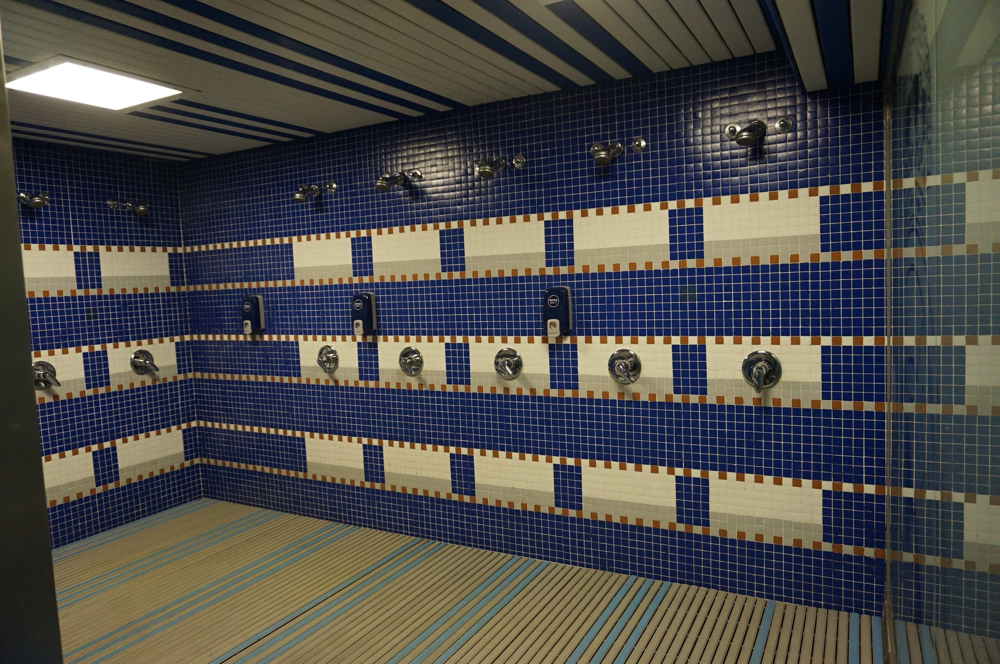
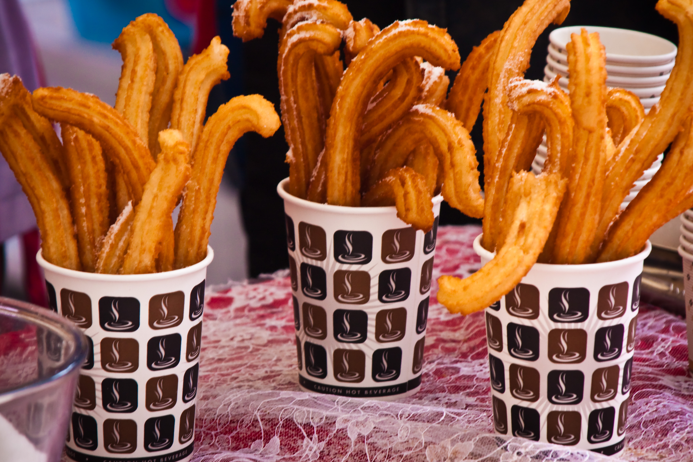

스페인은 볼거리들이 많다. 눈만 즐거운게 아니라 맛 있는게 많아 입도 즐거울수 있어 좋은곳
스페인의 수도 마드리드- 화려한 건물들이 인상적인 마드리드는 스페인여행코스에서 빼놓을 수 없는 관광명소. 스페인의 아름다움을 느낄 수 있는 곳이라 여행객들의 발길이 끊이지 않는다. 특히 마드리드 마요르 광장의 풍경은 스페인에서도 손에 꼽힐 만큼 아름답습니다.레알왕궁까지 걸어서 이동할 수도 있어서 많은 사람이 찾는 곳.
산 미구엘 시장 다양한 먹거리들을 많이판다.
산티아고 베르나베우-우리형 호우형이 있는 레알마드리드 홈구장



내부 락커룸과 샤워실 박물관을 볼 수 있다.
맛있는 곳이 있는곳 그라나다 - 스페인여행 중 반드시 방문해야 하는 곳 바로 알함브라 궁전이 있는 그라나다. 그라나다는 이슬람궁전 특유의 오묘한 분위기를 만끽해 볼 수 있는 도시. 알함브라궁전을 배경으로 한 야경이 아름다워 많은 관광객이 찾는다. 또한 생선, 문어, 새우 등의 음식이 맛있기로 소문나있다. 또한 대부분의 음식점에서 맥주를 마실 때 타파스를 무료로 내주니 반드시 즐기도록하자
바르셀로나-스페인 축구의 성지.스페인에서 두 번째로 큰 도시로 피카소와 가우디를 배출한 예술의 도시다.
보케리아시장:과일,정육,제과,과자등 다양한것들 많이 판다.

캄프누-세계최고 축구선수 ★메갓★ ★킹갓★ ★메신★이 있는 FC바르셀로나의 홈구장 축구팬이라면 무조건 가보자


스페인에는 맛집이 많다. 그중에서 빠에야와 츄러스가 유명하고 해산물 요리가 일품

물가도 저렴하고 구경거리도 많고 아주 좋은곳 스페인